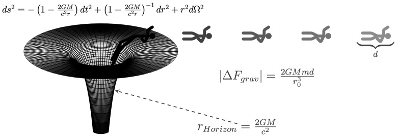
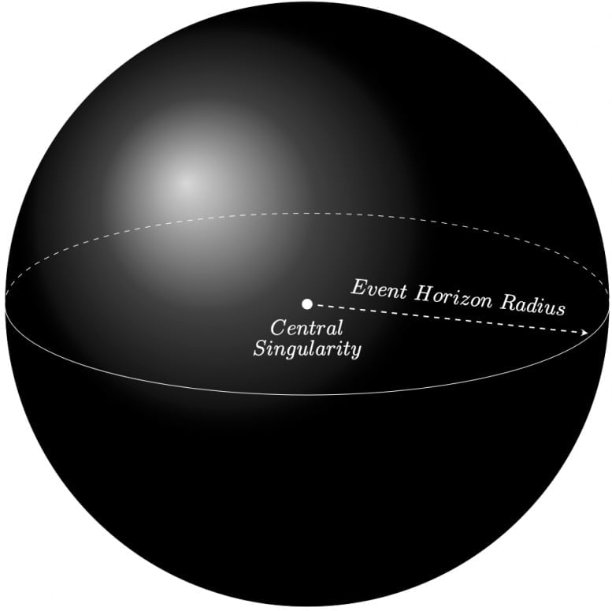
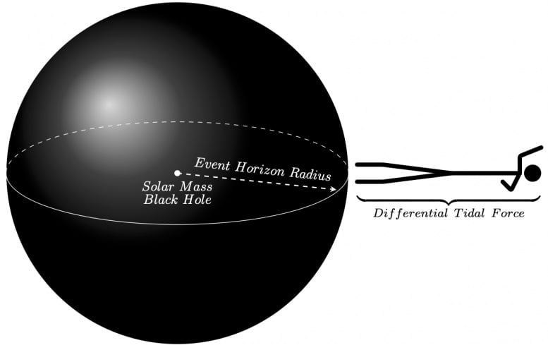
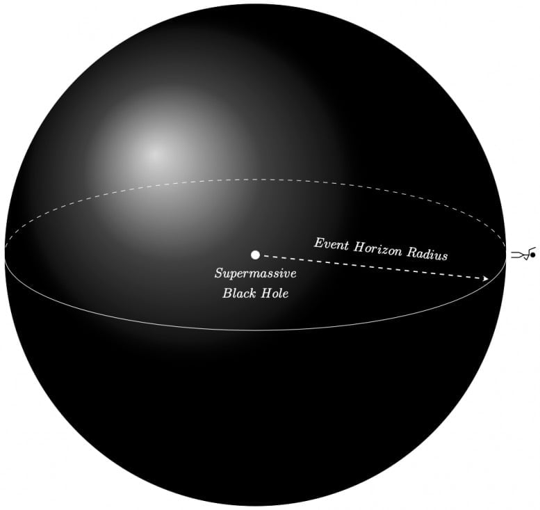
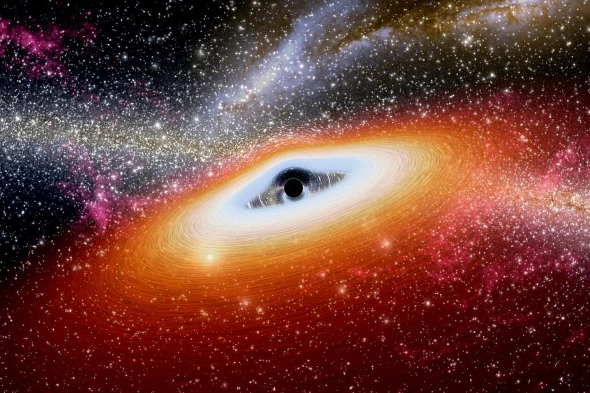

ဒါပေမယ့် ဒီလို ဝင်ဖို့ ဆိုတာက ထင်သလောတော့ မလွယ်ပါဘူး။ ဒီလို ဝင်နိုင်ဖို့ဆို ဝင်မယ့် တွင်းနက်ကြီးဟာ မဟာဧရာမ တွင်းနက်ကြီး (supermassive Black Hole) လဲ ဖြစ်ရပါမယ်။ အခြား ပတ်ဝန်းကျင်က ကြယ်တွေ ဂလက်ဆီ တွေနဲ့လဲ ဘာမှ ဆက်စပ်မှု လုံးဝ မရှိတဲ့ သီးသန့် တွင်းနက် တစ်ခု ဖြစ်ဖို့လဲ လိုအပ်ပါတယ်။
နောက်ဆုံး အချက်ကတော့ ဝင်သွားတဲ့ သုတေသီဟာ သူ့ရဲ့ တွေ့ရှိချက်တွေကို ဒီ စကြာဝဠာထဲက အခြား ဘယ်သူ့ကိုမှ ပြန်ပြောနိုင်လိမ့်မယ်လို့ မမျှော်လင့် ထားဖို့ပဲ ဖြစ်ပါတယ်။
အာကာသ တွင်းနက်တွေဟာ စကြာဝဠာထဲမှာ အပေါများဆုံး တွေ့ရတဲ့ အရာဝတ္ထုတွေပဲ ဖြစ်ပါတယ်။ ဒီ တွင်းနက်တွေဟာ စကြာဝဠာရဲ့ ဆင့်ကဲ ပြောင်းလဲမှု ဖြစ်စဉ် (evolution of the universe) မှာ အရေးပါတဲ့ နေရာက ပါဝင်နေပါတယ်။ Big Bang စတဲ့ အချိန်က စလို့ ယခုအချိန် အထိပါပဲ။ ကျွန်တော်တို့ သက်ရှိတွေ ဖြစ်ပေါ်မှုမှာတောင် ကဏ္ဍ တနေရာကနေ ပါဝင်ကောင်း ပါဝင်နေ နိုင်ပါတယ်။
Black Hole နှစ်မျိုးစကြာဝဠာထဲမှာ အာကာသ တွင်းနက်တွေ အမျိုးအစား အမျိုးစုံ ရှိပါတယ်။ ဒီ တွင်းနက်တွေဟာ အရွယ်အစား အကြီးအသေးလဲ ကွာကြသလို အချို့ကလဲ လျှပ်စစ်စွမ်းအင် အဖို အမ အားရှိတဲ့ တွင်းနက်တွေလဲ ရှိကြပါတယ်။ အချို့ တွင်းနက်တွေက ဂျင်လည်သလို ပတ်ချာလည် နေကြပါတယ်။ ဒါပေမယ့် ကျွန်တော်တို့ ဒီဆောင်းပါးမှာ ဆွေးနွေးသွားမယ့် အကြောင်းအရာ (Black hole ထဲ လူဝင်ကြည့်ဖို့ ကိစ္စ) အတွက် အဓိက အာကာသ တွင်းနက် အမျိုးအစား နှစ်မျိုးနဲ့ ပါတ်သက်ပြီး ပြောပြချင်ပါတယ်။
ပထမ တွင်းနက် အမျိုးအစားကတော့ လည်ပါတ်မှုလဲ မရှိဘူ၊ လျှပ်စစ်စွမ်းအင်လဲ မရှိဘူး (အဖိုဓါတ်လဲ မရှိ အမဓါတ်လဲ မရှိတဲ့ Electrically Neutral)၊ နောက်ပြီး ဒြပ်ထုကလဲ ကျွန်တော်တို့ရဲ့ နေလောက် ပဲ ရှိတဲ့ တွင်းနက်ပါ။ နောက် တွင်းနက် အမျိုးအစား ကတော့ မဟာ ဧရာမ တွင်းနက်ကြီး (supermassive black hole) တွေပါ။ ဒီ ဧရာမ တွင်းနက်ကြီးတွေရဲ့ ဒြပ်ထုဟာ ကျွန်တော်တို့ နေရဲ့ ဒြပ်ထုထက် အဆပေါင်း သန်းချီပြီး ရှိပါတယ်။ အချို့ ဧရာမ တွင်းနက်ကြီးတွေဆို နေအလုံးပေါင်း သန်းထောင်ချီရဲ့ ဒြပ်ထုနဲ့ ညီမျှတဲ့ ဒြပ်ထု ရှိကြပါတယ်။
ဒီ တွင်းနက် နှစ်မျိုးရဲ့ ဒြပ်ထုတင် ကွာခြားတာ မဟုတ်ပါဘူး။ သူတို့ရဲ့ ဗဟိုချက်နေရာကနေပြီး Event Horizon လို့ ခေါ်တဲ့ ပြန်လမ်းမဲ့ နယ်စပ်စည်း အထိ အကွာအဝေး (အချင်းဝက်) ကလဲ ကွာပါသေးတယ်။ Event Horizon ဆိုတာက ဒီနယ်စပ် ကျော်သွားရင် ဘယ်လိုမှ ပြန်မထွက်နိုင်တော့မယ့် နေရာကို ခေါ်တာ ဖြစ်ပါတယ်။ Point of no return ပေါ့ဗျာ။ ဒီမျဉ်းကို ကျော်သွားမိတဲ့ အရာတိုင်းဟာ တွင်းနက်ကြီးရဲ့ ဝါးမြိုခြင်းကို ခံရပြီး ပြင်ပ စကြာဝဠာကြီးထဲကနေ ထာဝရ ပျောက်ဆုံးလို့ သွားပါတော့တယ်။

ဒီ Event Horizon နယ်ခြားမျဉ်းရဲ့ အရွယ်အစားဟာ ဒီ တွင်းနက်ရဲ့ ဒြပ်ထုပေါ် မူတည်ပါတယ်။ ဥပမာ ကျွန်တော်တို့ရဲ့ နေနဲ့ ဒြပ်ထု တူညီတဲ့ တွင်းနက်ဆိုရင် သူ့ နယ်ခြားကလဲ အချင်းဝင် နှစ်မိုင်လောက်ပဲ ရှိပါမယ်။ ဆိုလိုတာက တွင်းနက်ရဲ့ ဗဟိုကနေ အကွာအဝေး ၂ မိုင်အတွင်း ဝင်သွားမိရင် ပြန်ထွက်နိုင်စရာ လမ်းစ မရှိတော့ ပါဘူး ခင်ဗျာ။
ကျွန်တောတို့ မစ်ကီးဝေး (Milky Way Galaxy) ဂလက်ဆီ ကြီးရဲ့ အလယ်ဗဟိုမှာ ရှိနေတဲ့ မဟာ ဧရာမ တွင်းနက်ကြီး ဆိုရင်တော့ နေအစင်းပေါင်း ၄ သန်းလောက်နဲ့ ညီမျှတဲ့ ဒြပ်ထု ရှိပါတယ်။ သူ့ရဲ့ even horizon နယ်ခြားကလဲ အချင်းဝက် မိုင်ပေါင်း ၇.၃ သန်း (၇,၃၀၀,၀၀၀ မိုင်) တောင် ရှိပါတယ်။ ဒါဟာ နေနဲ့ ကမ္ဘာ အကွာအဝေးရဲ့ ၁၇ ဆတောင် ရှိတာပါ။

ဒီအချက်ကို ပြန်ကောက်ရမယ် နေနဲ့ ဒြပ်ထုတူတဲ့ တွင်းနက်တစ်ခုထဲကို လူတစ်ယောက် ခြေထောက်ကနေ ဝင်သွားတယ် ဆိုပါဆို့။ ဒီတွင်းနက်ရဲ့ နယ်ခြားမျဉ်းနဲ့ ဗဟိုနဲ့ အရမ်းနီးကပ်တာမို့ ဝင်သွားတဲ့ သူ အပေါ် သက်ရောက်နေတဲ့ ဆွဲငင်အားတွေရဲ့ ကွာခြားချက်ကလဲသိသိသာသာ ကွားခြားပါတယ်။ သိပ္ပံ ပညာရှင်တွေရဲ့ တွက်ချက်မှု အရဆို ဒီ ဝင်သွားတဲ့ သူရဲ့ ခေါင်းနဲ့ ခြေထောက်ပေါ်ကို သက်ရောက်နေတဲ့ ဆွဲငင်အား ပမာဏဟာ အဆ ၁,၀၀၀ လောက်ကို ကွာမယ် လို့ ဆိုပါတယ်။ ဆိုတော့ကာ အခုနက ခြေထောက်ကနေ ဆင်းသွားတဲ့ သူအတွက် သူ့ခြေထောက်ပေါ် သက်ရောက်တဲ့ ဆွဲအားက သူ့ခေါင်းပေါ် သက်ရောက်တဲ့ အားထက် အဆ ၁,၀၀၀ သာနေပါတယ်။
ဒီအတွက် အကျိုးရလဒ်ကတော့ ခေါက်ဆွဲ ဆွဲဆန့်သလိုမျိုး ဒီလူဟာ အရှင်လတ်လတ် ဆွဲဆန့်ခံရတာပဲ ဖြစ်ပါတယ် (သေသွားပြီးတာလဲ ဖြစ်ချင် ဖြစ်မှာပေါ့)။ ဒါကို အီတာလျံ ခေါက်ဆွဲ ကို အမှီပြုပြီး Spaghettification (ဆပါဂတီ ဖြစ်ခြင်း) လို့ အမည်ပေးထားပါတယ်။ (မြန်မာ ဆန်ဆန် ခေါ်ချင်ရင်တော့ မုန့်တီဖြစ်သွားခြင်း ပေါ့ဗျာ။ ကျွန်တော်ကတော့ အဲ့လိုပဲ ခေါ်မယ်)

ဒီ ဧရာမ တွင်းနက်ကြီးကြတော့ သူ့ရဲ့ ဗဟိုနဲ့ နယ်စပ်မျဉ်းနဲ့ ကြားက အကွားအဝေးက မိုင် သန်းနဲ့ ချီ ရှိနေပါတယ်။ ဒီလို ဆွဲငင်အား ဗဟိုချက်နဲ့ အရမ်းဝေးတဲ့ နေရာမှာ ရှိနေတဲ့ အတွက် ဝင်သွားတဲ့ သူအပေါ်ကို သက်ရောက်တဲ့ ဆွဲငင်အား ကွာခြားချက်ကလဲ အရမ်းကို သေးငယ်ပါတယ်။ ပညာရှင်တွေရဲ့ တွက်ချက်မှု အရ ခေါင်းနဲ့ ခြေထောက်ကြား ဆွဲငင်အား ကွာခြားချက်ဟာ လုံးဝ မရှိသလောက်ပဲ လို့ ဆိုပါတယ်။ အဲ့သည်တော့ ဒီ ဧရာမ တွင်းနက်ကြီးရဲ့ နယ်စပ်ကို ဖြတ်တဲ့ သူအတွက်တော့သိပ်ပြီး ထူးထူးခြားခြား အဖြစ်အပျက်မျိုး ကြုံရမှာ မဟုတ်ဘူးလို့ ဆိုပါတယ်။ ပြောချင်တာကတော့ တွင်းနက်ကြီးရဲ့ ဆွဲအားကြောင့် မုန့်တီ ဖြစ်မသွားနိုင် ဘူးလို့ ဆိုလိုခြင်း ဖြစ်ပါတယ် (နယ်စပ်ကို ဖြတ်ချိန် ပြောတာနော်)။

အခြားစဉ်းစားဖွယ်ရာများ
အခုထိ ကျွန်တော်တို့ လေ့လာနိုင်သမျှ တွင်းနက်တွေရဲ့ ပါတ်ခြာလည်မှာ အလွန်ပူပြင်းတဲ့ ဓါတ်ငွေ့ ဝဲဂယက်ကြီး ရှိနေပါတယ်။ ဒီ ဓါတ်ငွေ့ ဝဲဂယက်ကြီးထဲမှာ ဓါတ်ငွေ့တွေ အပြင် ဖုန်မှုံ့တွေ၊ ဥက္ကာခဲ အပိုင်းအစတွေ အပြင် တွင်းနက်ကြီးနား အရမ်း နီးနီး ကပ်ကပ် သွားမိတဲ့ ဂြိုလ်တွေ နဲ့ နေတွေပါ တွေ့ရနိုင်ပါတယ်။ ဒီ ဝဲဂယက် ကြီးကို accretion disks လို့ ခေါ်ပါတယ်။ ဒီဝဲဂယက် ကြီးဟာ အလွန်လဲ ပူသလို အလွန်လဲ လှိုင်းထန်ပါတယ်။ ဒါ့ကြောင့် တွင်းနက်ထဲ ခရီးနှင်မယ့် သိပ္ပံ ပညာရှင် တစ်ဦးအဖို့ ဒီ ဝဲဂယက်ကို အရင် ကျော်လွှားနှိုင်ဖို့ ကြိုးစားရမှာ ဖြစ်ပါတယ်။ဒီ ဝဲဂယက်ရဲ့ အပူချိန်ကို ခံနိုင်ဖို့ ဆိုတာက မဖြစ်နိုင်တော့ ဝဲဂယက် မရှိတဲ့ ဧရာမ တွင်းနက်ကြီးကို ရှာဖို့ လိုပါတယ်။ ဒီလို ဝဲဂယက် မရှိဖို့ ဆိုတာက ဝဲဂယက်ကို ဖြစ်စေတဲ့ ကြယ်တွေ၊ ဂြိုလ်တွေ၊ ဓါတ်ငွေ့တိမ်တိုက်တွေနဲ့ ကင်းကွာနေတဲ့ တွင်းနက် ဖြစ်ဖို့ လိုပါတယ်။ ဒီလို ကင်းကွားဖို့ Isolated ဖြစ်နေတဲ့ အထီးကျန် ဧရာမ Black Hooe ကို ရှာတွေ့ဖို့ လိုပါတယ်။ တနည်းအားဖြင့်တော့ အနားမှာ တွင်းနက်ကြီး ဝါးမြိုပစ်ဖို့ ကြယ်တွေ၊ ဂြိုလ်တွေ၊ ဓါတ်ငွေ့တိမ်တိုက်တွေ ဘာတခုမှ မရှိတဲ့ နေရာက အထီးကျန် တွင်းနက်ကြီး ဖြစ်ဖို့ လိုပါတယ်။

ဒီလို ပြန်ပြောနိုင်ခွင့် မရဘူး ဆိုပေမယ့် တွင်းနက်ထဲ ဝင်သွားတဲ့ သိပ္ပံ ပညာရှင် အဖို့ကတော့ သူ့ရဲ့ တွေ့ရှိချက်တွေနဲ့ ကျေနပ်လို့ နေမှာ ဖြစ်ပါတယ်။ တစ်ခုပဲ မေးစရာ ရှိပါတယ်။ အဲ့တာကတော့ ပြန်လမ်းမဲ့ နယ်ခြားကို ဖြတ်ကျော် ဝင်ရောက် သွားပြီးတဲ့နောက် သူ့ရဲ့ တွေ့ရှိချက်တွေကို သာယာ ကြည်နူးနိုင်ဖို့ ဘယ်လောက် ကြာကြာ ဆက်အသက်ရှင် နိုင်မလဲ ဆိုတာပါပဲ။
Reference: Could a Human Enter a Black Hole to Study It – And Survive the Event Horizon? | SciTech Daily